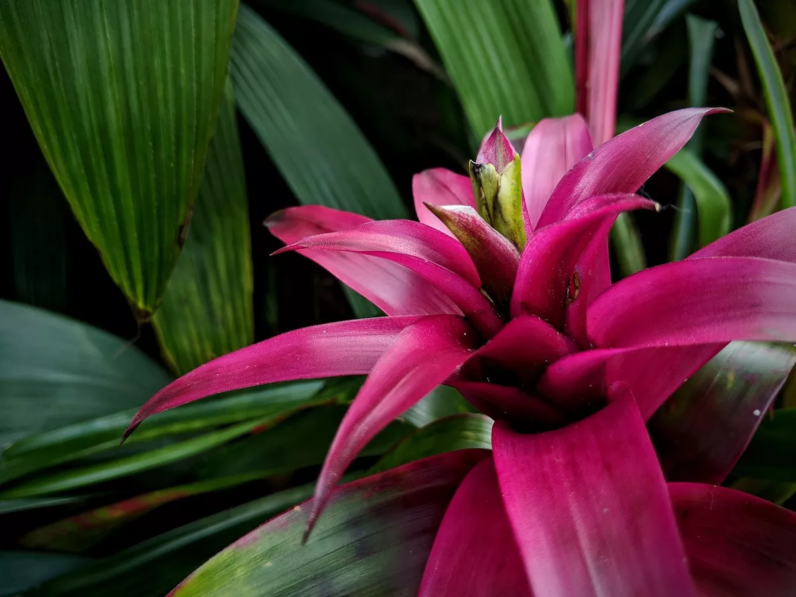

Bromélias são plantas tropicais da América Central e do Sul, conhecidas por sua beleza e formato de roseta que pode reter água, sendo epífitas (crescem em outras plantas), terrestres ou rupestres (crescem em rochas). Elas possuem folhas muitas vezes espinhosas, flores coloridas e são apreciadas por sua versatilidade em jardins e interiores, exigindo um ambiente úmido e boa drenagem para o cultivo.
